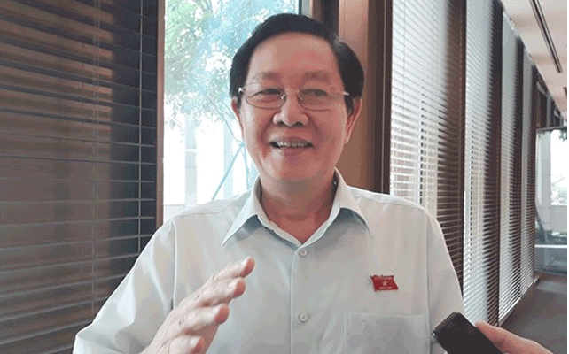

Liên quan đến việc 40 nhân tài ở Đà Nẵng xin ra khỏi nhà nước, trao đổi báo chí bên hành lang QH sáng nay, Bộ trưởng Nội vụ Lê Vĩnh Tân khẳng định chính sách trọng dụng nhân tài của Đảng và Nhà nước ta rất rõ.
Bộ trưởng cho biết, Nhà nước có chính sách trọng dụng những người học tập đạt thành tích tốt và đã được chứng minh trong thực tiễn về khả năng và năng lực cán bộ, trong điều kiện tuyển dụng đúng theo chuyên môn phù hợp với vị trí việc làm.
Thứ 2 chúng ta phải bố trí đúng người, đúng việc chứ không phải là những người học giỏi, những người có trình độ, có bằng cấp mà bố trí bất cứ một lĩnh vực nào phải phù hợp với điều kiện vị trí việc làm.
Thứ 3 phải tạo cho được môi trường để họ phát huy năng lực, sở trường của mình và phải luôn theo dõi, tạo điều kiện hỗ trợ và giúp đỡ họ.
Cuối cùng phải có chính sách tạo điều kiện, đề bạt, bổ nhiệm, thậm chí cả chính sách về lương bổng, thu nhập.
Nhân tài cũng phải qua kiểm nghiệm thực tế
Như ông nói, chính sách thu hút nhân tài đã rõ, tại sao các nhân tài đã được chọn, nhưng chỉ sau một thời gian làm việc lại xin ra?
_ Bản thân của trí thức trẻ và những người được trọng dụng trong chính sách đó cũng phải có thời gian kiểm nghiệm trong thực tế. Trong khi đề bạt bổ nhiệm phải có thời gian theo dõi tiếp tục nghiên cứu đến thời điểm chín muồi chúng ta mới thực hiện việc đề bạt.
Chính sách này chỉ thực hiện khi nào nhân tài đó chứng minh được bản lĩnh của mình, họ được bổ nhiệm đúng vị trí và phát huy được năng lực. Nếu trong thời gian nhất định mà không thể hiện được, không chứng minh được, không đáp ứng được yêu cầu thì
Thời gian qua những trường hợp được tuyển dụng mà áp dụng chính sách không đúng, thì Chính phủ, Thủ tướng cũng đã chỉ đạo kiên quyết là phải xem xét xử lý và thu
Để đảm bảo theo mặt bằng chung là áp dụng đúng quy định của pháp luật là không tự trọng dụng trong từng điều kiện riêng của địa phương mà đặt ra những tiêu chí không phù hợp quy định của pháp luật.
Các đại biểu cũng phản ánh cơ quan nhà nước hiện nay phải linh hoạt như khối tư nhân để tạo cạnh tranh thu hút nhân tài?
- Tôi nghĩ chính sách cũng phải dựa trên 4 “trụ cột” quan trọng - đó là chúng ta bố trí đúng chuyên môn, đúng việc làm, đó cũng là chính sách. Thứ 2, chúng ta có chế độ đãi ngộ phù hợp trong điều kiện kinh tế - xã hội của địa phương và của ngành lĩnh vực. Ví dụ như vấn đề nhà ở, vấn đề lương, vấn đề quy hoạch đề bạt, bổ nhiệm.
Trụ cột thứ 3 là chúng ta phải tạo đủ mọi điều kiện để cán bộ phát huy năng lực, sở trường của mình, trên cơ sở đó phải được theo dõi, giúp đỡ, hỗ trợ để cán bộ phát huy được tài năng.
Thứ 4, không bắt buộc người ta phải ở với mình, trong khi mình không đáp ứng được tiêu chuẩn điều kiện, không sử dụng đúng sở trường và khả năng của người đó. Bởi vì nhân tài đó là tài sản chung của đất nước chứ không chỉ riêng của cơ quan đơn vị
Như trường hợp của Đà Nẵng nhiều nhân tài vào đó nhưng vẫn làm hợp đồng, nên họ sẵn sàng ra đi và sẵn sàng đền bù hàng tỉ đồng để được ra khỏi bộ máy hành chính nhà nước.
Tuyển dụng nhân tài theo trường hợp đặc biệt chỉ 10-15%
Vậy theo ông có cơ chế nào để những nhân tài này vào được biên chế, công chức, ổn định tâm lý cho họ cống hiến?
- Tôi thấy bây giờ, đối với tri thức hiện nay, chúng ta không phải chỉ có con đường đi theo chức vụ. Mà công chức hiện nay là đi theo con đường chức nghiệp, tức là tạo mọi điều kiện để công chức có thể đi lên bằng khả năng, sở trường và chuyên môn của mình.
Hoạt động M&A Đông Nam Á cán mốc kỷ lục nhờ dòng tiền từ Trung Quốc